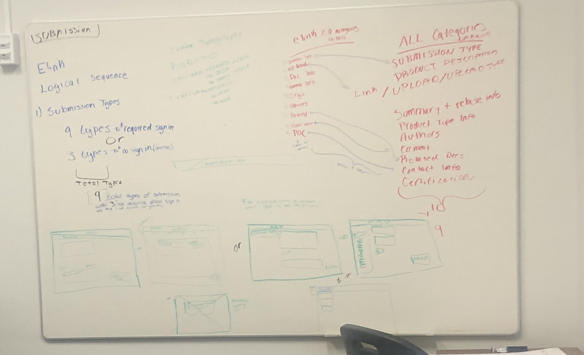
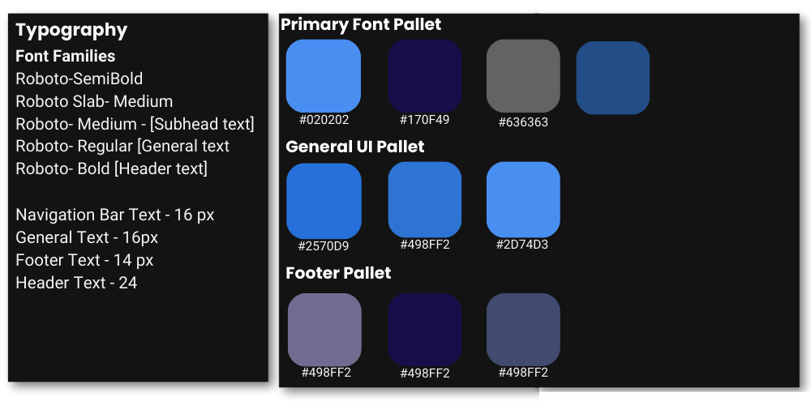

E-LINK 2.0
E-Link is a data repostory for scientific and technical information (STI) sponsored by the the Department of Energy (DOE).
"E-Link facilitates the electronic submittal of STI between DOE and its client community including researchers, reviewers, research administrators, and others doing business with DOE. STI deliverables provided to DOE through E-Link are announced, as appropriate, on web products maintained by OSTI, which provide free and convenient public access to full text and bibliographic data of products resulting from DOE-funded research.".Source: E-LINK
INTERSHIP OVERVIEW
The intern and applications team memebers will collaborate to:
- Support OSTI's work of collectin, preserving, and dmisseminating scientfic and techinal informations (STII) resulting from DOE-funded research and development increase the intern's knowledge of information science services, products, and systems in a federal environment;and
- Create usuable mockups and analysis for OSTI products.
- Determine key tasks for E-Link 2.0, measure their performance, and creat metrics based on those results.
- Furthermore, I had never ventured into creating a high-fidelity prototype to this extent before. While I continue to refine this skill, I have grown much more comfortable with the advanced features of Figma. Overall, my encounter with the challenges posed by Figma during this UX project has played a pivotal role in my development as a designer. It has deepened my understanding of the intricacies of UX design and emphasized the significance of perseverance, adaptability, and a continuous thirst for knowledge in this ever-evolving field.
I had the opportunity to engage with three active users of E-LINK, and through these conversations, I gained valuable insights. It became evident that the primary user base for this platform consisted of the Information Systems (IS) team responsible for curation and enhancement. Additionally, lab members would occasionally submit scientific and technical information (STI), which then underwent quality checks by the IS team.
As a contracted intern, I enjoyed greater flexibility in interacting with both the backend and IS teams, in contrast to regular employees who faced more constraints due to the government environment.
From these discussions with E-LINK users, it became clear that the platform had become outdated, having been created over two decades ago. It lagged behind other contemporary data repositories and was in need of modernization.

BENCHMARK ANALYSIS
E-LINK Overall review Comparisons: When compared to E-LINK, alternative repositories provide a user-centric and seamless browsing experience. These repositories feature modernized, straightforward navigation, responsive design, and visually relevant elements. For instance, NMDC employs button visuals to intuitively direct users towards specific actions, such as accessing the "Submission Portal." Unlike E-LINK, the color schemes on these websites are less intrusive and do not compromise readability.


While I couldn't gain access to the curation sections of these repositories due to access limitations, I did have the opportunity to examine the submission process. One notable observation was the industry standards for submitting Scientific and Technical Information (STI). In contrast to E-Link, all of these repositories mandated user authentication before permitting STI submissions, underscoring the importance of security and user accountability.
Furthermore, these repositories maintained a high degree of consistency in their submission processes, adhering to uniform syntax and best practices. The submission categories were also well-structured, catering to various types of STI, a level of organization that set them apart from the less structured approach employed by E-Link. This adherence to industry standards in the submission process highlights the commitment to efficiency and clarity within these platforms.
Conducting a comprehensive benchmark analysis further validated my concerns about the inadequacies of E-LINK's submission process. One of the prominent issues was its absence of logical categorical sequences, which made navigation convoluted for users. E-Link's design included nine types of submission forms that mandated user authentication, alongside three submission forms where sign-in wasn't necessary. This stark contrast in user requirements underscored a lack of good practice and introduced potential confusion for users. In the initial phases of my design work, I made it a priority to establish a consistent and user-friendly framework. My aim was to rectify the structural inconsistencies observed in E-Link and enhance the user experience by providing a clear and cohesive submission process, in alignment with industry best practices.
DESIGN PROCESS
I attempted to create basic wireframes, but in the course of my process, what I ended up with appeared to be closer to a low-fidelity representation.
Brainstorming

My biggiest design priority was the submission and curation process. E-Link's current submission was dynamic and categories were under different labels in the curation end and in the submission end. I wanted to simplify those processes, but I was still learning E-Link. I did my best to lay out my foundation based on the benchmark analysis.
As I was brainstorming and putting things together, I knew I wanted a simplistic pallet based on blue. Almost all the websites used Roboto so I stuck to that family.
General UI
Rationale: I aimed to adhere to the industry standards I had identified through my benchmark analysis, including a straightforward color scheme. I obtained the E-Link logo from the backend team as a valuable asset. My goal was to streamline the information architecture. The initial E-Link design featured a rich color palette, so, to maintain brand continuity, I integrated some gradients into the new design.
Submission Proccess and Curation
Understanding how to optimize the Submission and Curation categories proved to be a challenging task. While an IS team member typically undergoes several months of training on E-Link, I had only a few weeks to grasp its essentials for initiating the design process. In my research, I noticed that most benchmarked websites incorporated a side search bar with numerous filters.
Note: Subsequent to creating this wireframe, I uncovered the workflow used by the curation team. They primarily search for STI by OSTI number, rendering the side search bar less effective for their needs.
Design and Presentation
At the moment I am waiting for my internship to share my final presentation with me. In the meanwhile here is the final product.
General UI
Curation and Submission
Presentation
Project Takeaways
Engaging in UX design within stringent parameters was a fascinating experience. Given that the project was commissioned for the Department of Energy, I had to navigate through a multitude of specific rhetoric and guidelines.